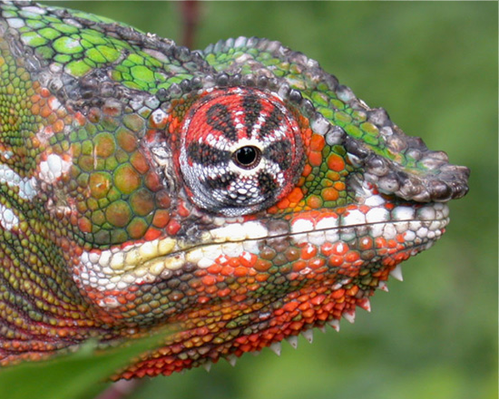
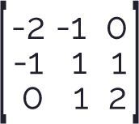
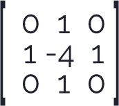
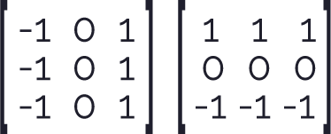

Convolution Matrix
Blurring, Sharpening, Embossing, Edge detection, and more
En la presente publicación se expone la forma en que se aplican los diferentes tipos de convolución en el procesamiento de imágenes y, videos (como se observará en el ejemplo VIDEO PROCESSING), por medio de cálculos matemáticos realizados a cada uno de los pixeles y a los que lo rodean en su vecindario.
El siguiente programa realiza la multiplicación de cada uno de los píxeles circundantes con una matriz llamada kernel o núcleo, como se vio en la documentación Kernel (image processing), que contiene diferentes valores predeterminados para aplicar correctamente las diferentes máscaras de convolución. El resultado de cada una de estas multiplicaciones se suman y este valor final es asignado a cada uno de los componentes RGB del nuevo píxel, el procedimiento se realiza conforme se explica en la documentación Spatial Enhancements.
También es importante resaltar la gran importancia de la implementación de las máscaras de convolución ya que muchas de ellas son utilizados en la medicina para detectar cambios importantes o anomalías que no deberían tener el cuerpo, por ejemplo podemos rescatar la máscara de convolución de Frei-Chen, Robinson y Kirsch utilizadas para la detección de cambios bruscos del brillo de la imagen lo cual indicaría cambios en las propiedades de un material, discontinuaciones en la superficie, entre otras más, como se profundiza en la documentación Convolution Edge Finders.
Comandos por teclado
| Tecla | Operación | Kernel (Núcleo) | Imagen resultante |
|---|---|---|---|
 |
Identidad |  |
 |
 |
Acentuar los bordes |  |
 |
 |
Repujado |  |  |
 |
Detección de bordes |  |
|
 |
Detección de bordes |  |  |
 |
Detección de bordes |  |
 |
 |
Enfocar |  |
 |
 |
Desenfoque de cuadro(normalizado) |
 |
|
Desenfoque gaussiano 5 × 5(aproximación) |
 |
 |
|
 |
Máscara de desenfoque 5 × 5(sin máscara de imagen) |
 |
|
 |
Operador de Sobel | ||
 |
Operador de Prewitt |  | |
 |
Operador de Frei-Chen |  |
|
 |
Operador de Robinson |  |
 |
| Operador de Kirsch |  |
 |
Image of Furcifer pardalis. Panther chameleon from the island of La Réunion. Source: Wikipedia, the free encyclopedia.Panther Chameleon
p5*js Code
var lienzo_01;
var lienzo_02;
var img_01;
var img_02;
// It's possible to convolve the image with many different
// matrices to produce different effects. This is a high-pass
// filter; it accentuates the edges.
let matrixsize = 3;
var matrix = [ [ 0, 0, 0 ],
[ 0, 1, 0 ],
[ 0, 0, 0 ] ];
function setup() {
createCanvas(1100, 450);
background(210);
pixelDensity();
img_01 = loadImage('https://upload.wikimedia.org/wikipedia/commons/b/b8/Panther_Chameleon_%28Furcifer_pardalis%29.jpg');
img_02 = loadImage('https://upload.wikimedia.org/wikipedia/commons/b/b8/Panther_Chameleon_%28Furcifer_pardalis%29.jpg');
lienzo_01 = createGraphics(500, 450);
lienzo_02 = createGraphics(600, 450);
}
function draw() {
drawImage_01();
drawImage_02();
image(lienzo_01, 0, 0);
image(lienzo_02, 550, 0);
}
// Dibuja la imagen de la Izquierda
function drawImage_01() {
lienzo_01.image(img_01, 0, 0);
var title = "IMAGEN ORIGINAL";
lienzo_01.textSize(14);
lienzo_01.textAlign(CENTER);
lienzo_01.text(title, 0, 20,lienzo_01.width);
}
// Dibuja la imagen de la Derecha
function drawImage_02() {
var title = "MATRIZ DE CONVOLUCION";
lienzo_02.textSize(14);
lienzo_02.textAlign(CENTER);
lienzo_02.text(title, 0, 20,lienzo_02.width);
// We're only going to process a portion of the image
// so let's set the whole image as the background first
image(img_02, 0, 0);
loadPixels();
img_02.loadPixels();
let img = createImage(600, 450);
img.loadPixels();
for (let x = 0; x < width; x++) {
for (let y = 0; y < height; y++ ) {
let c = convolution(x, y, matrix, matrixsize, img_02);
let loc = (x + y*img_02.width)*4;
img.pixels[loc] = red(c);
img.pixels[loc+1] = green(c);
img.pixels[loc+2] = blue(c);
img.pixels[loc+3] = alpha(c);
}
}
img.updatePixels();
image(img, 550, 0);
}
function convolution(x, y, matrix, matrixsize, img){
var rtotal = 0;
var gtotal = 0
var btotal = 0;
var atotal = 0;
var offset = matrixsize / 2;
for (let i = 0; i < matrixsize; i++){
for (let j= 0; j < matrixsize; j++){
// What pixel are we testing
var xloc = x+i;
var yloc = y+j;
var loc = (xloc + img.width*yloc)*4;
// Make sure we haven't walked off our image, we could do better here
loc = constrain(loc,0,img.pixels.length-1);
// Calculate the convolution
rtotal += ((img.pixels[loc]) * matrix[i][j]);
gtotal += ((img.pixels[loc+1]) * matrix[i][j]);
btotal += ((img.pixels[loc+2]) * matrix[i][j]);
atotal += ((img.pixels[loc+3]) * matrix[i][j]);
}
}
// Make sure RGB is within range
rtotal = constrain(rtotal, 0, 255);
gtotal = constrain(gtotal, 0, 255);
btotal = constrain(btotal, 0, 255);
atotal = constrain(atotal, 0, 255);
// Return the resulting color
return color(rtotal, gtotal, btotal);
}
// Se ejecuta cuando se presiona cualquier tecla
function keyPressed() {
matrixsize = 3;
if (key === '0') { // Identidad
matrix = [ [ 0, 0, 0 ],
[ 0, 1, 0 ],
[ 0, 0, 0 ] ];
} else if (key === '1') { // Acentúa los bordes
matrix = [ [ -1, -1, -1 ],
[ -1, 9, -1 ],
[ -1, -1, -1 ] ];
} else if (key === '2') { // Repujado
matrix = [ [ -2, -1, 0 ],
[ -1, 1, 1 ],
[ 0, 1, 2 ] ];
} else if (key === '3') { // Detección de bordes
matrix = [ [ 1, 0, -1 ],
[ 0, 0, 0 ],
[ -1, 0, 1 ] ];
} else if (key === '4') {
matrix = [ [ 0, 1, 0 ],
[ 1, -4, 1 ],
[ 0, 1, 0 ] ];
} else if (key === '5') {
matrix = [ [ -1, -1, -1 ],
[ -1, 8, -1 ],
[ -1, -1, -1 ] ];
} else if (key === '6') { // Enfocar
matrix = [ [ 0, -1, 0 ],
[ -1, 5, -1 ],
[ 0, -1, 0 ] ];
} else if (key === '7') { // Desenfoque de cuadro (normalizado)
matrix = [ [ 1/9, 1/9, 1/9 ],
[ 1/9, 1/9, 1/9 ],
[ 1/9, 1/9, 1/9 ] ];
} else if (key === '8') { // Desenfoque gaussiano 5 × 5 (aproximación)
matrixsize = 5;
matrix = [ [ 1/256, 4/256, 6/256, 4/256, 1/256 ],
[ 4/256, 16/256, 24/256, 16/256, 4/256 ],
[ 6/256, 24/256, 36/256, 24/256, 6/256 ],
[ 4/256, 16/256, 24/256, 16/256, 4/256 ],
[ 1/256, 4/256, 6/256, 4/256, 1/256 ] ];
} else if (key === '9') { // Máscara de desenfoque 5 × 5 (sin máscara de imagen)
matrixsize = 5;
matrix = [ [ -1/256, -4/256, -6/256, -4/256, -1/256 ],
[ -4/256, -16/256, -24/256, -16/256, -4/256 ],
[ -6/256, -24/256, 476/256, -24/256, -6/256 ],
[ -4/256, -16/256, -24/256, -16/256, -4/256 ],
[ -1/256, -4/256, -6/256, -4/256, -1/256 ] ];
}
}